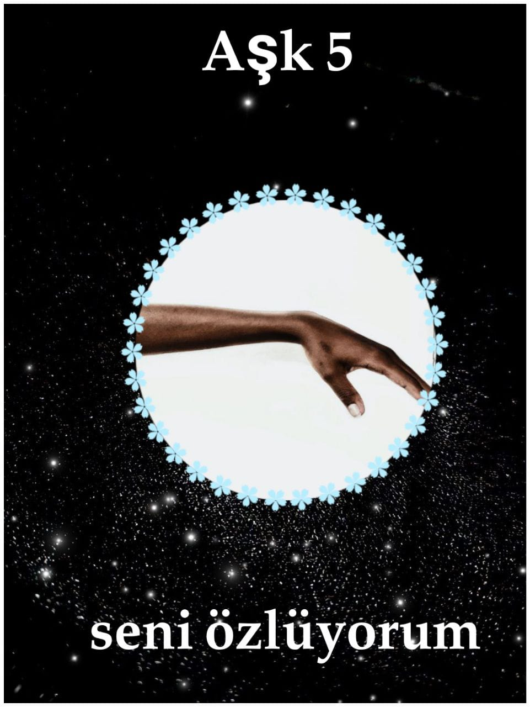

Discover the Secrets of Your Energy and Future
Welcome to a sanctuary of peace and inner balance. Here, we help you understand the language of the cosmos, zodiac energies, and the hidden guidance of your soul.

Why Explore Energy and Astrology?
Astrology and tarot are not just predictions; they are mirrors of the human inner self, helping you reorganize your thoughts and restore mental harmony.
- Understand the energies surrounding you with clarity
- Gain spiritual guidance for your important life decisions
- Achieve inner peace and universal alignment